RF Calc JP をご利用いただきありがとうございます。RF（高周波・無線）の電力・電圧・dB・VSWR などを、絶対値と相対値（dB）を混ぜて計算できるツールです。使い方とよくある質問をまとめました。
本アプリの中核は、電力の絶対値（W / mW / dBm など）に、利得・損失（dB）を続けて加減算できることです。たとえば無線機の出力からケーブル損失やアンプ利得を順に足し引きして、最終出力を求められます。
例：1 W − 3.8 dB → 26.2 dBm ／ 0.4169 W ／ 416.9 mW
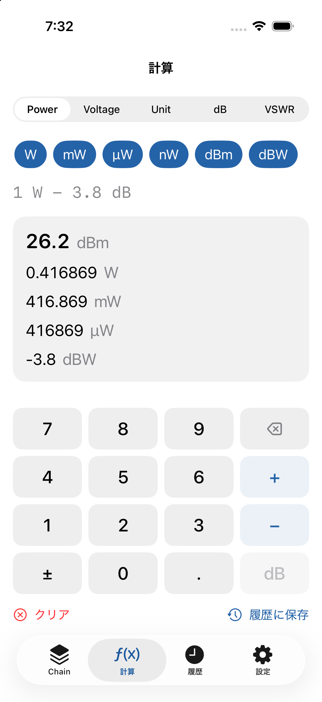
+ − と dB を使って利得・損失を続けて入力します。W / mW / µW / nW / dBm / dBW を相互に変換します。1つの値を入力すると、対応する各単位を一度に表示します（例：1 W = 1000 mW = 30 dBm = 0 dBW）。電力単位の計算にインピーダンスは不要です。
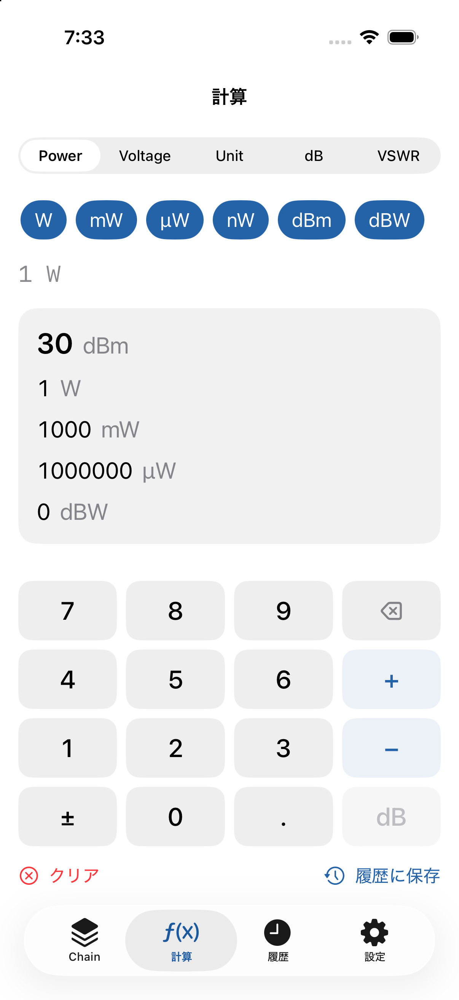
最初に電力の絶対値を入力し、そのあとに各段の利得（+dB）・損失（−dB）を順に足していきます。無線機出力 → ケーブル損失 → コネクタ損失 → アンプ利得 → 最終出力、のように段ごとの値を確認できます。各段には任意の名前を付けられます。
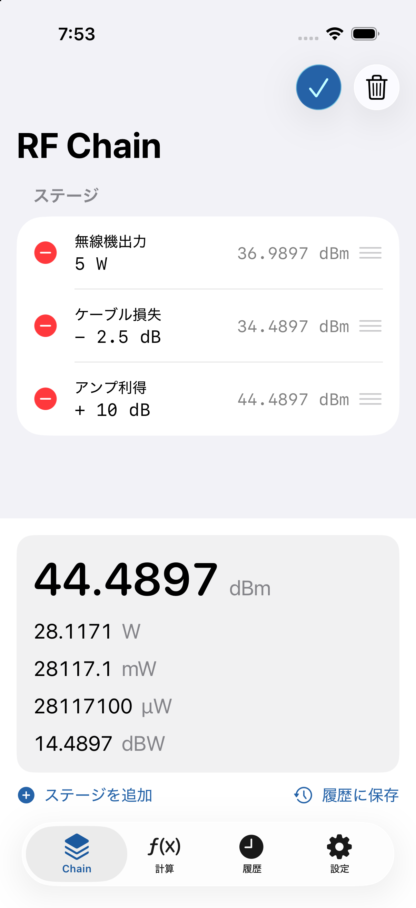
V / mV / µV / nV と dBV / dBmV / dBµV を変換します。電圧から電力・dBm へ変換するときはインピーダンスが必要です（既定 50 Ω、75 / 600 Ω・任意値も選択可）。電圧値は RMS を基準とし、Peak / Peak-to-Peak を選ぶと内部で RMS に換算して計算します。現在の基準は画面に表示されます。
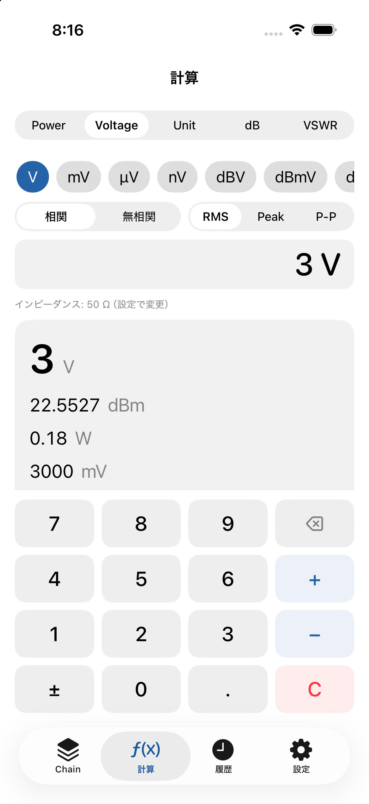
電力・電圧・抵抗（インピーダンス）の単位をまとめて相互変換します。結果は可能な限り複数単位を同時に表示します。
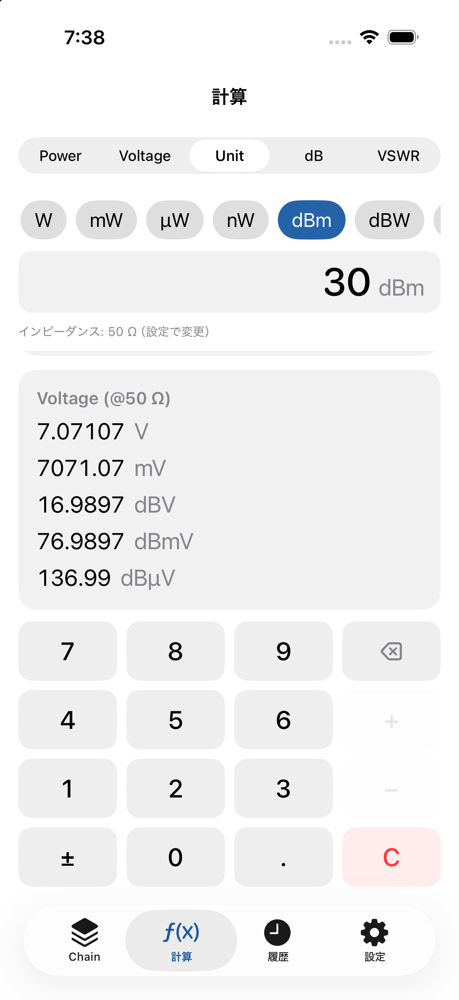
dB と電力比・電圧比を相互変換します（例：+3 dB → 電力比 ≈1.9953 / 電圧比 ≈1.4125）。電力比は 10(dB/10)、電圧比は 10(dB/20) で計算します。
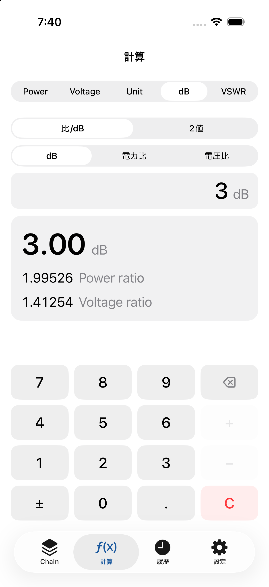
VSWR・反射係数 |Γ|・リターンロス・反射電力(%)・ミスマッチロスを相互に変換します（例：VSWR 2.0 → 反射電力 ≈11.11% / リターンロス ≈9.542 dB / ミスマッチロス ≈0.512 dB）。VSWR = 1.0 のときリターンロスは ∞ と表示されます。
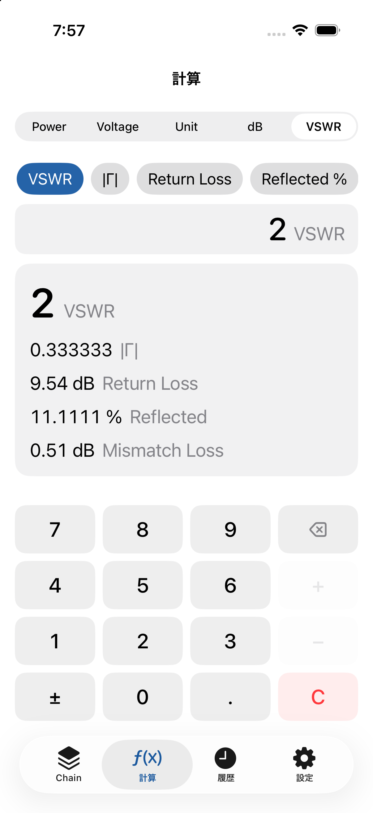
内部計算はすべて倍精度（Double）で行い、途中で丸めません。丸めは表示のときだけ行うため、連続した計算でも精度を保ちます。
0 W は dBm に変換できない（−∞ になる）ため、電力の絶対値は 0 より大きい値を入力してください。なお −30 dBm のような負の dBm は正常な小電力の値です（エラーではありません）。
VSWR は定義上 1.0 未満になりません。反射係数 |Γ| も 0〜1 の範囲で入力してください。
電圧↔電力の変換にはインピーダンスが必要です。設定で 50 / 75 / 600 Ω または任意値を指定してください。また、値が RMS / Peak / Peak-to-Peak のどれかを正しく選んでください。
設定で表示桁数（Auto / 有効数字）を変更できます。値の大きさに応じて W / mW / µW などの単位が自動で選ばれます。
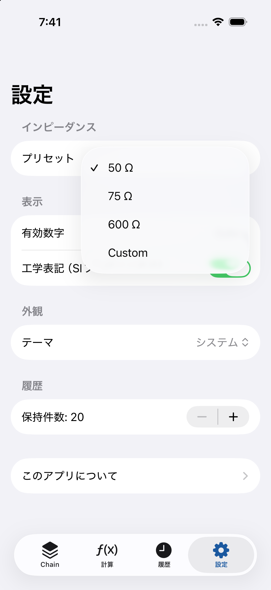
不要です。本アプリは完全オフラインで動作し、アカウント登録・通信・トラッキングはありません。計算履歴は端末内にのみ保存されます。
不具合のご報告・ご要望は、メールでお気軽にどうぞ。
メール: genre_pincers_3d@icloud.com
Thank you for using RF Calc JP, a tool for RF (radio-frequency) calculations of power, voltage, dB, and VSWR — mixing absolute values with relative values (dB). Here are the basics and common questions.
The core of the App is applying gains and losses (dB) to an absolute power value (W / mW / dBm …) in sequence. For example, start from a transmitter’s output and add cable loss and amplifier gain to find the final output.
Example: 1 W − 3.8 dB → 26.2 dBm / 0.4169 W / 416.9 mW
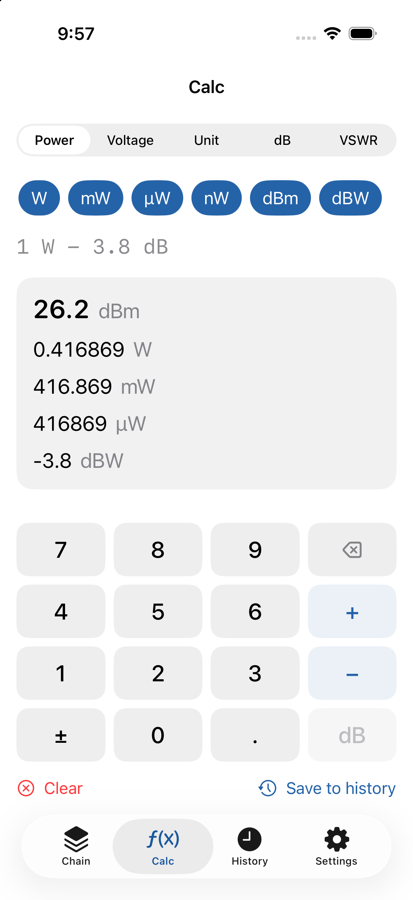
+ − and dB to add gains and losses in sequence.Converts among W / mW / µW / nW / dBm / dBW. Enter one value to see the others at once (e.g., 1 W = 1000 mW = 30 dBm = 0 dBW). Power-unit calculations need no impedance.
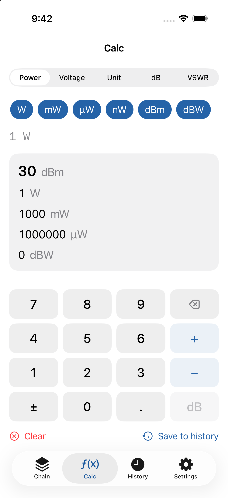
Start with an absolute power value, then add each stage’s gain (+dB) or loss (−dB) in order: TX output → cable loss → connector loss → amplifier gain → final output. You can see each stage’s value and name each stage.
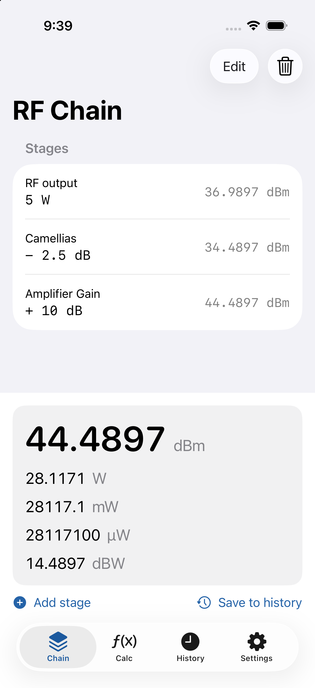
Converts among V / mV / µV / nV and dBV / dBmV / dBµV. Converting voltage to power/dBm requires an impedance (default 50 Ω; 75 / 600 Ω or a custom value are selectable). Voltage is referenced to RMS; choosing Peak / Peak-to-Peak converts to RMS internally. The current reference is shown on screen.
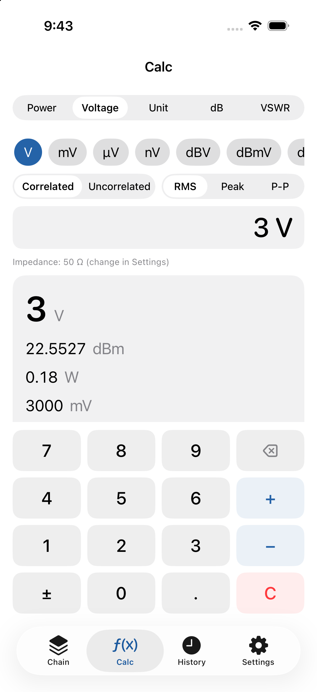
Converts power, voltage, and resistance (impedance) units together, showing multiple units at once where possible.
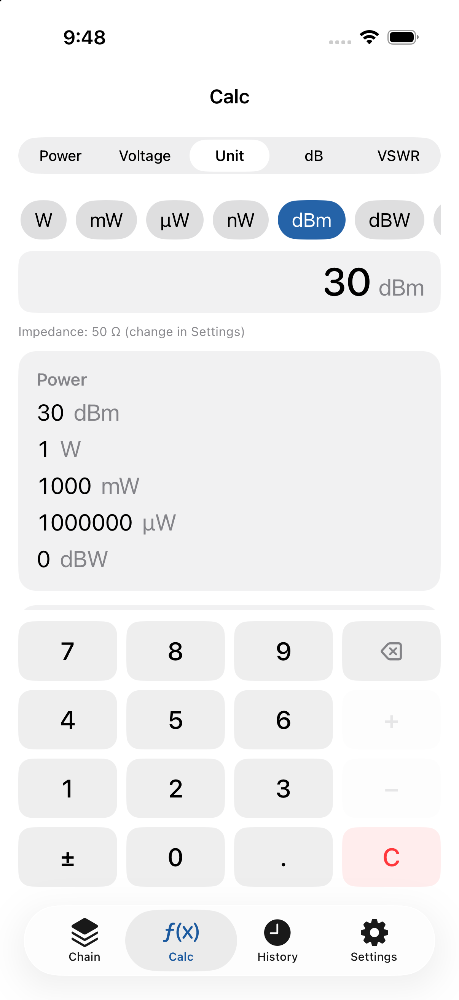
Converts between dB and power/voltage ratios (e.g., +3 dB → power ratio ≈1.9953 / voltage ratio ≈1.4125). Power ratio = 10(dB/10), voltage ratio = 10(dB/20).
Converts among VSWR, reflection coefficient |Γ|, return loss, reflected power (%), and mismatch loss (e.g., VSWR 2.0 → reflected power ≈11.11% / return loss ≈9.542 dB / mismatch loss ≈0.512 dB). At VSWR = 1.0, return loss is shown as ∞.
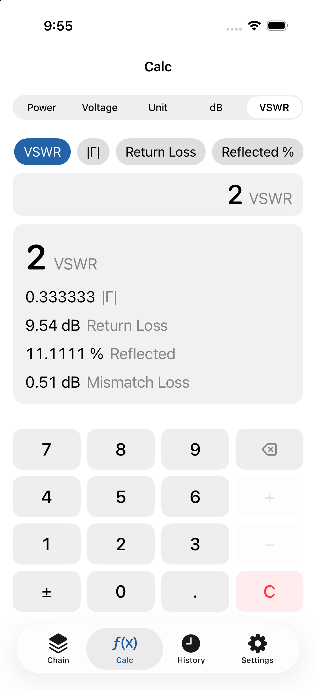
All internal math uses double precision and is never rounded mid-calculation. Rounding happens only for display, so chained calculations stay accurate.
0 W cannot be converted to dBm (it would be −∞), so enter a power greater than 0. Note that a negative dBm is a valid small-power value (e.g., −30 dBm), not an error.
VSWR cannot be below 1.0 by definition. Enter the reflection coefficient |Γ| in the range 0–1.
Voltage ↔ power conversion needs an impedance. Set 50 / 75 / 600 Ω or a custom value in Settings, and make sure the value is correctly marked as RMS / Peak / Peak-to-Peak.
Set the display digits (Auto / significant figures) in Settings. Units such as W / mW / µW are chosen automatically based on magnitude.
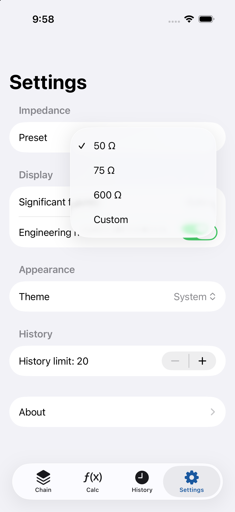
No. The App runs fully offline with no account, no network, and no tracking. Your calculation history is stored only on your device.
Bug reports and requests are welcome by email.
Email: genre_pincers_3d@icloud.com